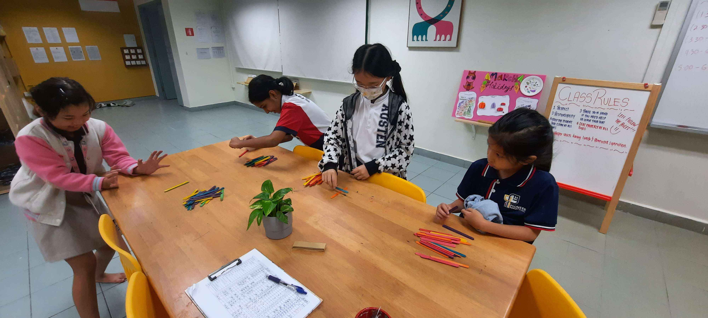
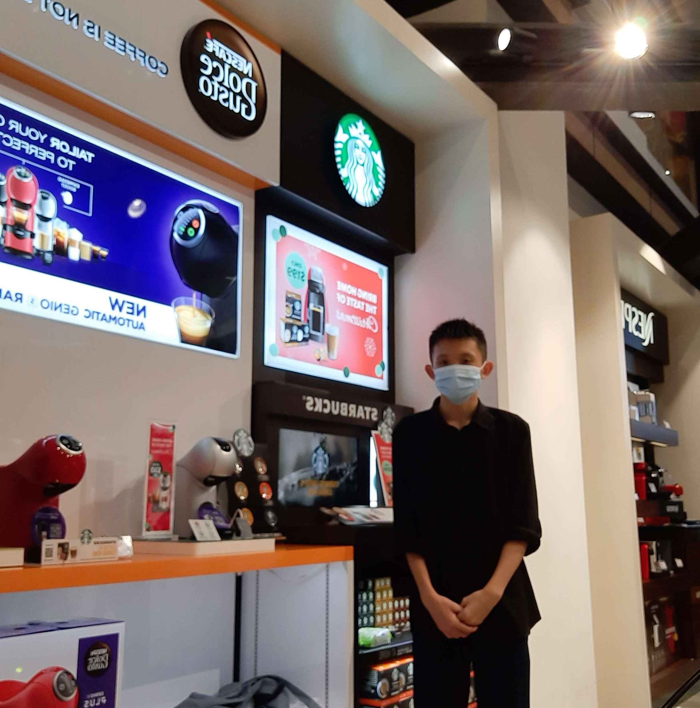

Job Experience
DayCare Teacher

These delightful children were under my care and supervision during my part-time job as a student care teacher. During my tenure, I ensured their well-being, prioritizing their safety and diligently working with them to finish their homework before they returned home at the end of the day.
During my time there I learnt:
- - Patience when teaching children
- - How to pacify crying children
- - How to reply to question on the spot
- - The struggles teachers have to endure when dealing with children
Nescafe Promoter

I worked at Harvey Norman to promote coffee machines that were a product of Nescafe and Starbucks' collaboration.
During my time there I learnt:
- - Patience when explaining products to customers
- - Perserverance when searching around, trying to get potential customers
- - How to sell a product within a short time frame